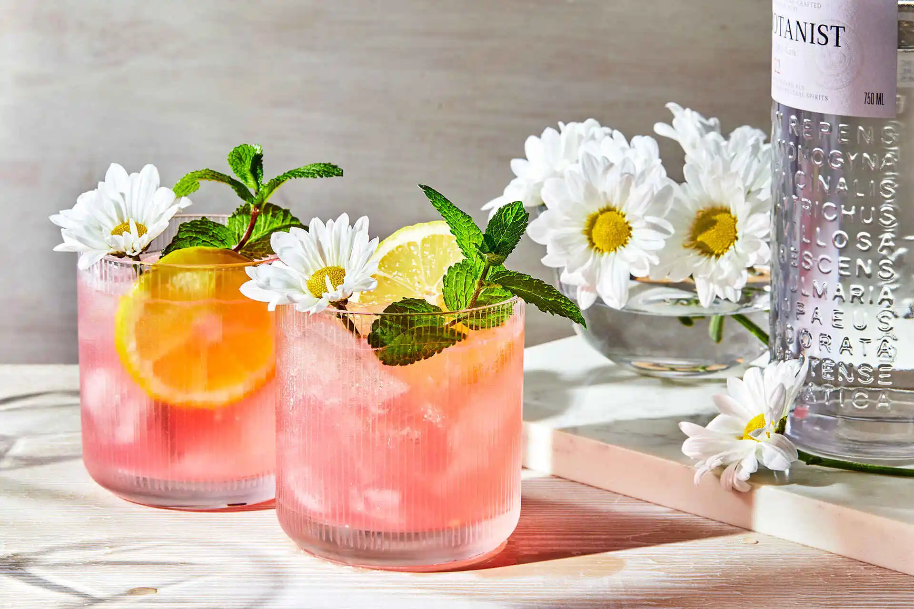

Gin Daisy

A quintessential Daisy, the Gin Daisy
The Gin Daisy is a staple cocktail in the family of Daisies.
This classic cocktail dates back to the 1870s, and was created by Jerry Thomas.
This recipe follows the traditional version, which calls for gin, lemon juice, orange liquer, and topped with seltzer water.
Ingredients
- 2 ounces of Gin
- 3/4 ounce of fresh Lemon Juice
- 3/4 ounce Cointreau
- 2 drops of Saline Solution
- Seltzer Water to top off drink
Directions
- Add lemon juice to shaker.
- Add Cointreau to shaker.
- Add gin to shaker.
- Add 2 drops of saline solution to shaker.
- Crack 2 large rocks of ice into shaker.
- Shake until cocktail is properly diluted.
Shake roughly 2 seconds less than normal, as we will be topping the drink off with Seltzer Water.
- Dirty pour cocktail into double rocks glass.
- Garnish with a lemon wheel.
Home